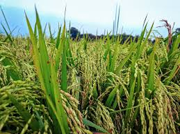
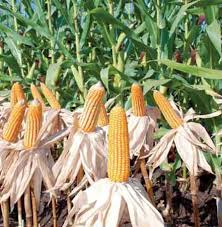
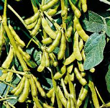

Filter Peran
Status
Total Pengguna Aktif
1,284
+12% vs bulan lalu
Daftar Pengguna
| Nama & Email | Peran | Status | Tgl Daftar | Aksi |
|---|---|---|---|---|
 Bambang Pamungkas Bambang Pamungkasbambang.pam@email.com | Petani | Aktif | 12 Mei 2023 | |
 Siti Mariam Siti Mariamsiti.mariam@agri.id | Admin | Aktif | 05 Jan 2024 | |
 Agus Hermawan Agus Hermawanagus_her@outlook.com | Petani | Suspend | 20 Nov 2022 | |
 Dewi Wahyuni Dewi Wahyunidewi.w@farm.co.id | Petani | Aktif | 18 Feb 2024 |
Menampilkan 4 dari 1,284 pengguna
123...321
Keamanan Data
Semua perubahan pengguna tercatat secara permanen dalam sistem audit untuk kepatuhan ISO 27001.
Butuh Bantuan?
Hubungi tim support IT jika mengalami kendala manajemen hak akses atau integrasi sistem.
Profil Komoditas Petani

Bambang Pamungkas
Komoditas utama: Padi. 4 lahan aktif.

Dewi Wahyuni
Komoditas utama: Jagung. 2 lahan aktif.

Siti Mariam
Komoditas rotasi: Kedelai. Menunggu validasi.